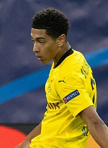

| Bellingham | |||||||||
|  | |||||||||
| Nombre completo | Jude Victor William | ||||||||
| Nacimiento y Edad | 29 de Junio de 2003, 20 años | ||||||||
| Altura y Peso | 1,86m y 75kg | ||||||||
| Club Actual | Real Madrid | ||||||||
| Posición | Centrocampista | ||||||||
| Seleción Nacional | Inglaterra | ||||||||
| Trayectoria | |||||||||
| Birmingham City F.C. (2019-20) | |||||||||
| Borrusia Dortmund (2020-23) | |||||||||
| Real Madrid (2023-act.) | |||||||||